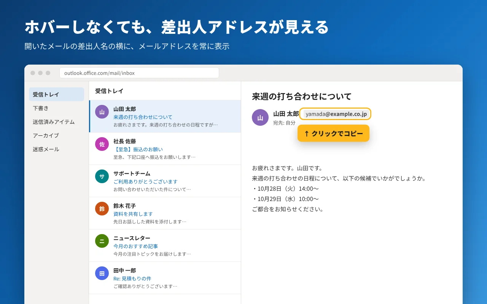
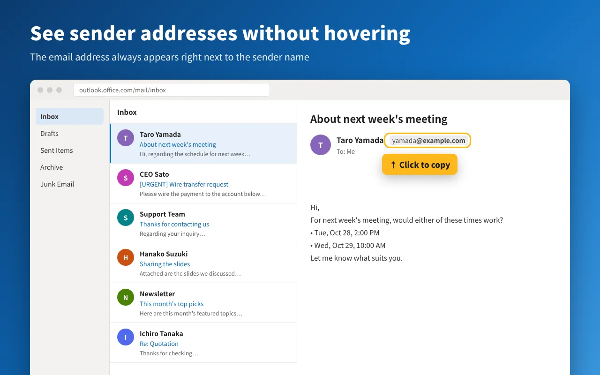
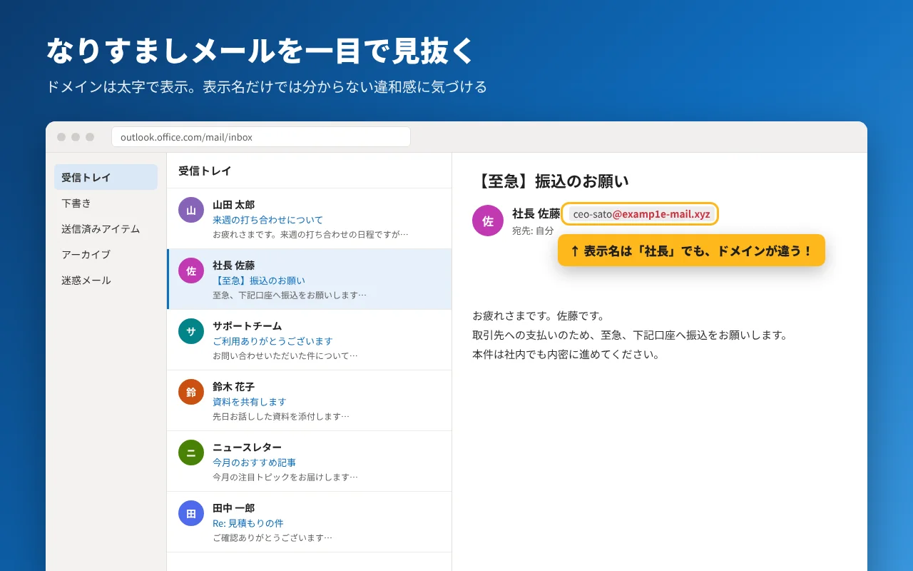
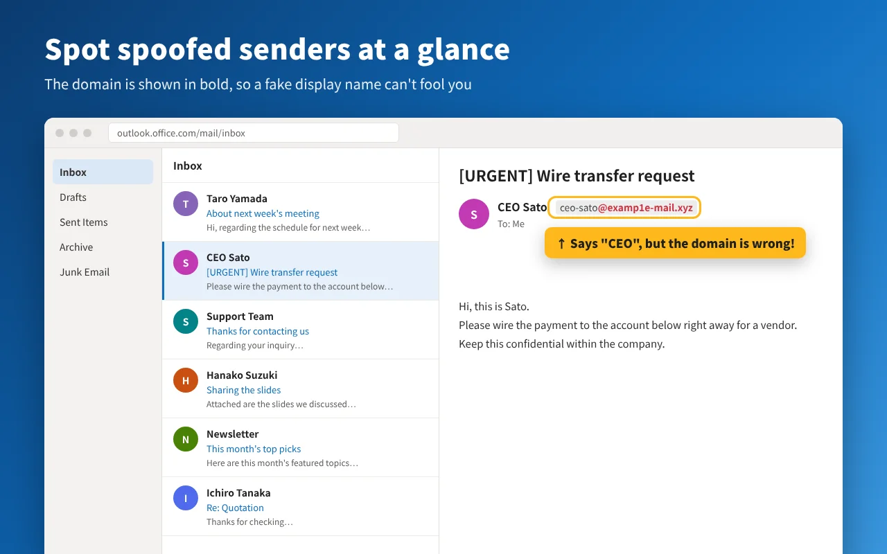
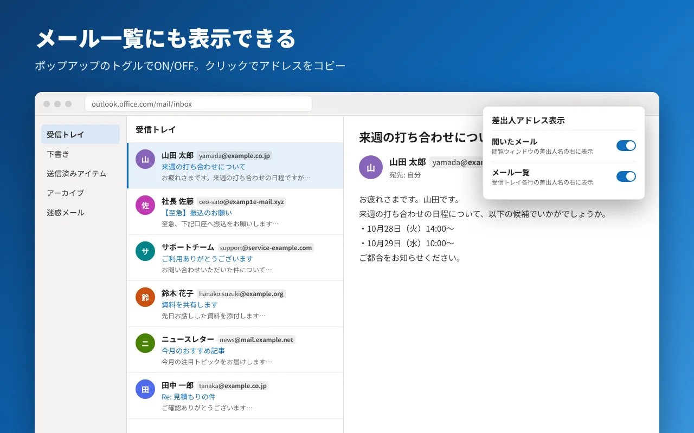
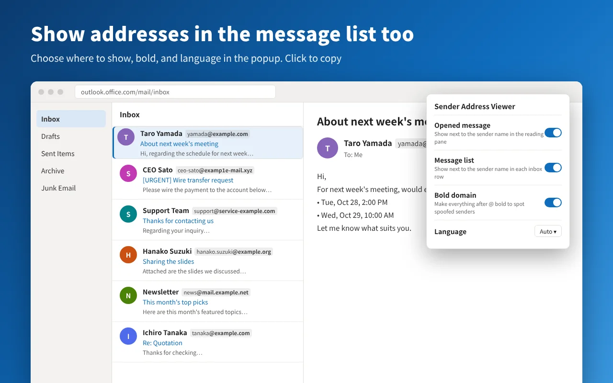

その「社長」、
本当に社長から？
That "CEO" email.
Who really sent it?
Outlook on the web は差出人の名前しか見せてくれません。この Chrome 拡張機能は、差出人名のすぐ横にメールアドレスを常に表示します。ホバーは不要です。
Outlook on the web only shows the sender's name. This Chrome extension always shows their email address right next to it, no hovering required.
現在 Chrome ウェブストアで審査中です。公開までは GitHub から手動で導入できます。
Currently under review on the Chrome Web Store. Until then, you can install it manually from GitHub.
右上のスイッチで、拡張機能のあり・なしを切り替えられます。
Use the switch to compare with and without the extension.
アドレスを見るたびに、ホバーしていませんか
Tired of hovering just to see an address?
Outlook on the web では、差出人の表示名しか出ません。アドレスはマウスを乗せたときのポップアップでしか確認できず、設定で常時表示に切り替えることもできません。表示名は送り主が自由に決められるので、名前だけでは本当の送り主はわかりません。
Outlook on the web shows only the sender's display name. The address appears only in a hover card, and there is no setting to show it all the time. Anyone can set any display name, so the name alone tells you nothing about who really sent the email.
- いつもの Outlook
- Outlook as it is
- 社長 佐藤
- CEO Sato
- 拡張機能を入れると
- With the extension
- 社長 佐藤CEO Satoceo-sato@examp1e-mail.xyz
できること
What it does
- 開いたメールにアドレスを表示Addresses in the opened message閲覧ウィンドウの差出人名の右に、メールアドレスを常に表示します。The sender's address always appears next to their name in the reading pane.
- メール一覧にも表示Addresses in the message list受信トレイの各行にも表示できます。ポップアップのスイッチで切り替えます。Optionally show them on every inbox row too. Turn it on from the popup.
- ドメインを太字にBold domains@ 以降を太字にするので、似せたドメインのなりすましに気づきやすくなります。ポップアップでオフにもできます。Everything after @ is bold, so look-alike domains stand out. You can turn it off in the popup.
- クリックでコピーClick to copy表示されたアドレスをクリックすると、そのままコピーできます。Click a shown address to copy it to your clipboard.






紹介動画
Video
データは一切送信しません
Nothing leaves your browser
アドレスは開いているページの中から読み取り、同じページに表示するだけです。外部への通信、アクセス解析、トラッキングはありません。保存するのは表示のオン・オフ設定だけです。詳しくはプライバシーポリシーをご覧ください。
Addresses are read from the page you have open and shown on that same page. No network requests, no analytics, no tracking. Only your on/off display settings are saved. See the privacy policy.
対応サイト：outlook.office.com / outlook.office365.com / outlook.live.com / outlook.cloud.microsoft
Works on: outlook.office.com / outlook.office365.com / outlook.live.com / outlook.cloud.microsoft
使い始める
Get started
- Chrome ウェブストアから拡張機能を追加します。
- Outlook on the web を開く（開いていたら再読み込み）。
- メールを開くと、差出人名の横にアドレスが出ます。一覧にも出したいときは、拡張機能アイコンのポップアップでオンにします。
- Add the extension from the Chrome Web Store.
- Open Outlook on the web (reload it if it's already open).
- Open any message to see the address. To show addresses in the message list too, turn it on from the extension's popup.
不具合やご要望は GitHub の Issues へどうぞ。
Found a bug or have an idea? Open an issue on GitHub.